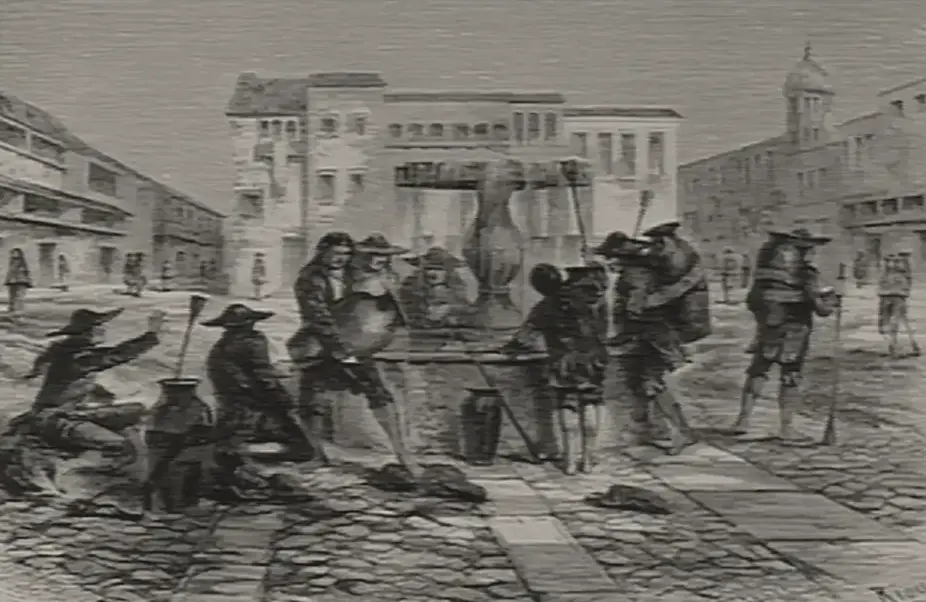

· Edición 18 · 6 min de lectura
El Niño avisó en junio y el agua se raciona igual

Grabado de Laly según Édouard Riou, 1873 · CC BY 4.0, vía Wikimedia Commons
El Niño avisó en junio y el agua se raciona igual
En pocas palabras. La sequía de El Niño ya obliga a repartir el agua por turnos en barrios de Medellín y Cali y en pueblos de Cundinamarca. No es una sorpresa: el fenómeno se anuncia con meses y vuelve cada pocos años. Lo que se repite es la respuesta: llega tarde, con carrotanques y decretos de emergencia, mientras mucha agua se sigue perdiendo en los tubos.
Qué pasó. Piense en un tanque con un hueco. Mientras llueve, nadie lo nota. Cuando deja de llover, el hueco es lo primero que se ve. Así está el agua en el país:
- Medellín. Desde finales de agosto, EPM corta el agua de noche en seis comunas, donde viven unas 300.000 personas. Hubo una pausa, pero volvieron los cortes. El 28 de septiembre, EPM advirtió que el ahorro todavía no alcanza.
- Cali. Desde el 22 de septiembre, Emcali reparte el agua por días en sectores de las comunas 18 y 20, en la ladera. Los ríos Cali y Meléndez van bajos, y el acueducto todavía arrastra daños del terremoto.
- Cundinamarca y Boyacá. La CAR, la autoridad ambiental de la región, cuenta 35 municipios con problemas de agua. Puerto Salgar y Viotá declararon calamidad pública; seis municipios están en alerta roja.
En septiembre, el Ministerio de Vivienda calculó que 558 municipios, más de la mitad del país, tienen riesgo alto o muy alto de quedarse sin agua.
La respuesta grande, otra vez, es de emergencia. El 22 de septiembre, el ministro de Agricultura anunció que el Gobierno decretaría una emergencia económica por El Niño el 28, para congelar deudas del agro. Al cierre de esta edición no encontramos el decreto firmado.
Cómo llegamos aquí. El Niño es un calentamiento del océano Pacífico que le quita lluvia a buena parte de Colombia. No llegó de sorpresa: el 11 de junio, el Ideam y la UNGRD, la entidad que atiende los desastres, avisaron que había comenzado. El nudo está en lo que se hace entre un Niño y otro:
- Se reacciona cuando ya no llueve. Una revisión publicada en 2025 en una revista de la Universidad Distrital contó al menos ocho Niños severos entre 1972 y 2025. Concluye que la respuesta del Estado ha sido sobre todo de reacción: racionamientos y carrotanques, poca prevención.
- El tubo pierde. Según la Superservicios, la entidad que vigila los acueductos, en 2024 se perdieron en promedio 10,34 metros cúbicos al mes por cada usuario que paga. La regla acepta 6. Es casi lo que la CRA, la comisión que regula el agua, considera razonable que gaste un hogar de clima frío: 13. Por cada cinco baldes que puede usar esa familia, otros cuatro se quedan en el camino.
- El papel promete más agua que el río. Las corporaciones autónomas dan concesiones: permisos para que empresas, fincas y comercios saquen una cantidad fija de agua de un río. Cuando el río baja, el permiso no baja solo. (Conocimiento general.)
- Quien arregla no recibe el aplauso. Cambiar tubos cuesta hoy y se ve poco. El beneficio llega en el siguiente Niño, quizá con otro alcalde. (Conocimiento general.)
Ya pasó antes. En el Niño de 2015 y 2016, 719 municipios tuvieron algún tipo de afectación y 237 tuvieron problemas para dar agua, según la UNGRD citada por la prensa. En Bogotá, la sequía obligó a racionar desde abril de 2024 hasta el 12 de abril de 2025: un año de turnos. Funcionó: la ciudad ahorró 46,5 millones de metros cúbicos, según el Distrito. Pero a la fuerza, no por diseño.
¿Hay salida? Hay tres cosas con evidencia:
- Pagar por el agua que se recupera. En Ciudad Ho Chi Minh (Vietnam) se perdía más de 40% del agua. La ciudad contrató a una empresa a la que le pagaba según las fugas que lograra cerrar. Al final se ahorraban 122 millones de litros al día, según un estudio de caso del Banco Mundial.
- Cobrar más al que gasta de más, a tiempo. La herramienta ya existe. Desde diciembre de 2024, la CRA permite cobrar un recargo por cada metro cúbico por encima de 13, 14 o 16 al mes, según el clima. Se activa con las alertas del Ideam. No encontramos si ya se activó este año.
- Mostrar cuánto gasta el vecino. En un ensayo con más de 100.000 hogares en Atlanta (Estados Unidos), las cartas que comparaban el consumo de cada casa con el de sus vecinos bajaron el gasto más que las que solo pedían ahorrar. La vergüenza también ahorra.
Pero ojo. Nada de esto es gratis.
- El efecto se gasta. En Atlanta, el impulso de las cartas se fue apagando con el tiempo.
- Racionar también enferma. Un estudio de 2021 con casi 13 millones de casos de dengue en Brasil encontró más riesgo de dengue entre tres y cinco meses después de una sequía, sobre todo en ciudades. La razón probable: las canecas donde la gente guarda agua cuando se la cortan, donde se cría el mosquito.
- Cerrarle la llave a una finca también cuesta. Una concesión recortada puede ser una cosecha perdida o un turno de trabajo menos.
Dos lecturas
Emergencia para llegar a tiempo. El Niño puede secar cultivos, subir la comida y dejar a productores sin cómo pagar sus créditos. Con una emergencia económica, el Gobierno puede congelar esas deudas en semanas. Para el campo, esperar el trámite normal puede ser llegar tarde.
Lo anunciado no es emergencia. El Niño se avisa con meses. En abril, la Corte Constitucional tumbó otra emergencia y dijo que los problemas ligados al clima son estructurales y tienen herramientas ordinarias. Decretar emergencia cada vez saca al Congreso de la decisión y deja la prevención para después.
Quién decide y cuándo
Quién decide. La CAR decide si recorta o suspende concesiones de agua a empresas, comercios y fincas en 35 municipios. La CRA puede activar el recargo al consumo excesivo. El Gobierno decide si expide la emergencia por El Niño; si lo hace, la Corte Constitucional la revisa.
Cuándo. La CAR dijo, a finales de septiembre, que decidiría en las dos semanas siguientes. La emergencia no tiene fecha confirmada.
Cómo participar. Con un derecho de petición, cualquier persona puede pedirle a su corporación autónoma la lista de concesiones de agua de su municipio, y reportar fugas en la calle a la empresa de acueducto. (Conocimiento general.)
Seguimiento de la decisión
Pendiente · plazo:
CAR de Cundinamarca (Corporación Autónoma Regional): Decidir si reduce o suspende las concesiones de agua de empresas, comercios y fincas en 35 municipios de Cundinamarca y Boyacá para que no les falte a los acueductos.
La CAR anunció la revisión a finales de septiembre y dijo que decidiría en las dos semanas siguientes; la fecha es aproximada.
Pendiente · sin fecha fija
Presidente y Consejo de Ministros; después, la Corte Constitucional: Expedir o no la emergencia económica por El Niño, anunciada para congelar deudas del agro, y, si se expide, revisar si se ajusta a la Constitución.
El ministro de Agricultura la anunció el 22 de septiembre para el 28. Al 5 de octubre no encontramos el decreto firmado.
La paradoja del día
En abril, la Corte dijo que los problemas del clima son estructurales y tienen herramientas ordinarias. En junio, el Ideam avisó que llegaba El Niño. En septiembre, el Gobierno anunció una emergencia por El Niño. Lo único imprevisto fue la sorpresa.
Para conversar
La pregunta. Si en su barrio cortan el agua de noche, ¿quién debería ceder primero: las casas, las fincas, las fábricas o el tubo roto de la esquina que nadie arregla?
Qué puede hacer usted. Compare sus últimas facturas: si el consumo sube sin razón, puede haber una fuga en la casa. Y si guarda agua, tápela: el mosquito del dengue busca agua quieta. (Conocimiento general.)
Para leer más
Los holocaustos de la era victoriana tardía, de Mike Davis (2001; en español, Publicacions de la Universitat de València, 2006). Cuenta las sequías de El Niño de finales del siglo XIX en la India, China y Brasil, y cómo las decisiones de los gobiernos de entonces las volvieron hambrunas. Ayuda a ver que el clima trae la sequía, pero las reglas deciden a quién le falta.
When the Rivers Run Dry (Cuando los ríos se secan), de Fred Pearce (2006). Un periodista ambiental recorre ríos y acuíferos que se agotan en varios continentes y lo que se ha intentado para cuidarlos. No confirmamos que tenga edición en español.
¿Le interesa ver las fuentes?
21 fuentes: 3 académicas, 6 oficiales, 1 de una organización, 11 de prensa.
- Prensa Infobae. Ministerio de Vivienda identificó 558 municipios en riesgo por el fenómeno de El Niño y emitió recomendaciones
- Prensa El Tiempo. El mapa de los racionamientos de agua crece en Colombia por la sequía: así avanza la crisis del fenómeno de El Niño
- Prensa Infobae. Medellín inicia un racionamiento nocturno de agua en seis comunas por el fenómeno de El Niño: así funcionará la medida
- Prensa Infobae. Llovió en Medellín, pero EPM mantuvo la alerta porque aún no se cumplen los niveles de ahorro en el consumo de agua
- Prensa Occidente. Alternancia de agua en Cali inicia hoy en las comunas 18 y 20
- Prensa Portafolio. CAR revisará concesiones de agua a empresas y podrá reducir caudales por riesgo de desabastecimiento
- Prensa Infobae. La CAR podrá reducir o suspender concesiones de agua en 35 municipios por desabastecimiento hídrico
- Prensa Colombia.com. ¡Alerta roja en seis municipios de Cundinamarca! CAR advierte racionamientos de agua por fuerte sequía
- Oficial Ideam, Dimar y UNGRD. Boletín sobre el estado del ciclo ENOS (El Niño), 11 de junio de 2026
- Oficial Ideam. Ideam indica que las condiciones tipo El Niño continúan fortaleciéndose
- Prensa Semana. Gobierno De La Espriella decretará nueva emergencia económica el lunes 28 de septiembre por el fenómeno del Niño
- Prensa El País (Cali). Gobierno decretará emergencia nacional el lunes para congelar deudas de agricultores golpeados por El Niño
- Oficial Corte Constitucional. Sentencia C-075 de 2026: revisión del Decreto Legislativo 1390 de 2025 (emergencia económica)
- Académica Revista Tecnogestión, Universidad Distrital (Tovar Romero, Jaramillo Gómez, Lizcano Caro y Angarita Manosalva, 2025). El Niño y la crisis del agua en Colombia: revisión cronológica de su impacto y de las respuestas del Gobierno
- Oficial Superintendencia de Servicios Públicos Domiciliarios. Informe sectorial de los servicios públicos domiciliarios de acueducto y alcantarillado 2024
- Oficial Comisión de Regulación de Agua Potable y Saneamiento Básico (CRA). Resolución CRA 1005 de 2024: uso racional del agua en eventos de escasez
- Prensa El País (Cali). El fenómeno de El Niño afectó a 719 municipios en todo el país
- Oficial Instituto Distrital de Recreación y Deporte (Alcaldía de Bogotá). Bogotá levanta el racionamiento de agua ante la estabilización en los niveles del sistema
- Organización Banco Mundial. Estudio de caso: el contrato por resultados para reducir pérdidas de agua en Ciudad Ho Chi Minh
- Académica Review of Economics and Statistics (Ferraro y Price, 2013), versión de NBER. Usar estrategias no monetarias para influir en el comportamiento: evidencia de un experimento de campo a gran escala
- Académica The Lancet Planetary Health (Lowe y otros, 2021). Efectos combinados de las amenazas hidrometeorológicas y la urbanización sobre el riesgo de dengue en Brasil
Glosario
- El Niño: calentamiento del océano Pacífico que cambia el clima; en buena parte de Colombia trae menos lluvia y más calor.
- Concesión de agua: permiso de la autoridad ambiental para sacar una cantidad de agua de un río o un pozo.
- CAR: Corporación Autónoma Regional de Cundinamarca, la autoridad ambiental de buena parte de Cundinamarca y de algunos municipios de Boyacá.
- Pérdidas de agua (agua no contabilizada): el agua que el acueducto produce pero no llega a cobrarse, por fugas, conexiones ilegales o medidores que fallan.
- CRA: Comisión de Regulación de Agua Potable y Saneamiento Básico; fija las reglas de las tarifas de acueducto.
- Emergencia económica: estado de excepción que le permite al presidente dictar decretos con fuerza de ley por un tiempo corto. La Corte Constitucional los revisa todos.
- Contrato por resultados: contrato en el que se le paga al contratista según lo que logra, no según lo que hace.
- Calamidad pública: declaración de un municipio o departamento que le permite actuar y contratar más rápido ante un desastre.
Nota metodológica
Hicimos unas 45 búsquedas en español e inglés: barrido de noticias del 2 al 5 de octubre (Colombia, América Latina y mundo), revisión de los temas abiertos (gas, FMI y presupuesto, Fondo Milagro, salario mínimo) y búsquedas dirigidas de documentos oficiales (Ideam, Superservicios, CRA, Corte Constitucional) y de estudios (revistas de economía, salud pública y gestión del agua). No pudimos abrir ningún documento completo, ni oficiales ni de prensa: trabajamos con resúmenes y resultados de búsqueda, y no atribuimos a los estudios más de lo que dicen sus resúmenes. De 21 fuentes, 10 no son de prensa; para el hecho del día casi todo viene de la prensa.
En los temas abiertos no hubo hechos nuevos después de la edición 17: el gas sigue sin racionamiento desde el 29 de septiembre, el Fondo Milagro sin fiducia firmada según lo último publicado, el mínimo sin cifras y el FMI sin acuerdo. Por eso no agregamos actualizaciones.
Quedó sin verificar o con límites:
- La emergencia por El Niño: la anunciaron el ministro de Agricultura y la prensa para el 28 de septiembre, con una cartera del agro de unos 55 billones de pesos. No encontramos el decreto firmado, lo que no prueba que no exista.
- Las pérdidas de 10,34 metros cúbicos por usuario vienen del resumen del informe de la Superservicios; según el mismo resumen, esos datos cubren solo una cuarta parte del territorio. La comparación con los 13 metros cúbicos de la CRA y la cuenta de los baldes son nuestras.
- Lo que dijo la Corte en la sentencia C-075 de 2026 lo conocemos por resúmenes de su texto y de comentaristas jurídicos, no por la sentencia completa.
- Las cifras del Niño de 2015 y 2016 son de la UNGRD citadas por un solo medio (Fuente única; no verificado.).
- Los 558 municipios en riesgo vienen de la prensa que cita al Ministerio de Vivienda; no abrimos su comunicado.
- Los cortes de Medellín han tenido pausas; no sabemos con certeza en qué sectores siguen hoy.
- El ensayo de Atlanta es un experimento con hogares asignados al azar; el estudio de Brasil es un modelo estadístico con datos de casi 20 años; el caso de Vietnam es un estudio descriptivo del Banco Mundial, no una evaluación de impacto.
Puntaje de impacto. Filtro primero (las cuatro condiciones de nudo) y luego puntaje de 1 a 3 en alcance, gravedad, duración, cercanía y decisión en curso; gravedad y cercanía valen doble (máximo 21).
| Tema | Alcance | Gravedad | Duración | Cercanía | Decisión | Total | Resultado |
|---|---|---|---|---|---|---|---|
| Agua y racionamiento por El Niño | 3 | 3 | 2 | 3 | 2 | 19 | Elegido |
| Salud en las capitales y crédito a EPS | 3 | 3 | 2 | 3 | 2 | 19 | EPS tratadas el 26 de septiembre |
| Contrato de erradicación manual | 2 | 2 | 2 | 3 | 2 | 16 | Menor impacto |
| Ofensiva anticorrupción | - | - | - | - | - | - | No pasa el filtro: sin mecanismo nombrable |
| Elecciones en Brasil | - | - | - | - | - | - | No pasa el filtro: competencia política |
El agua pasa las cuatro condiciones: se repite (ocho Niños severos desde 1972, 2015-2016, Bogotá 2024-2025), tiene un mecanismo (respuesta tardía, pérdidas en los tubos, permisos que no bajan con el río), alguien lo puede cambiar (CAR, CRA, Gobierno, alcaldías y empresas de acueducto) y el daño es medible (barrios y municipios con cortes, calamidades declaradas). A igual puntaje con la salud, elegimos el tema que no se ha tratado.
El grabado es de Laly según un dibujo de Édouard Riou (1873), de la colección Wellcome, y muestra a los aguadores de Cuzco en la pila de la plaza del Cabildo, cuando el agua de la ciudad se repartía a mano; es de otra época y lo usamos para evocar el tema. Le recortamos el marco del escaneo.
De los dos libros, ninguno está en Santo & Seña. Los elegimos por el tema y confirmamos autor, año y editorial en resultados de búsqueda y fichas de librerías y bibliotecas.